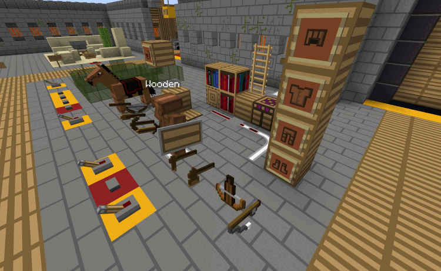

RestWorld
A Compact, Rich Resource Pack Testing World
Version 1.16.1As Minecraft has evolved, there are more and more blocks! There used to be a few downloadable test worlds for looking at a pack, but over time these have become much more unwieldy, and so fewer and fewer folks have attempted to make these test worlds, and those that exist are either very compressed or very spread out.
RestWorld squares this circle by looping. In a single spot, it loops through blocks and mobs that are similar. So they take up a small space, and within that space, the variations are looped. For example, all the ores take up one block, which changes from coal ore to iron ore to gold ore and so on. Each is shown for a couple seconds (you can adjust the timing). And you can stop the looping at any time to focus on a specific ore texture.
This means all blocks and mobs are within a space that you can easily manuever in. You can also compare how related blocks look. For example, if you want ores to look the same, you will notice errors much more easily when you can see a proper ore texture switch to the offending one.
A few examples may help:
How to Use RestWorld
You start out in the middle, where you can get a control book that allows you to stop and start the looping, as well as speeding it up or slowing it down. You can do these with buttons in the middle, but the book is a control you can carry with you. The book also has links to the other places in RestWorld (see below).
Rooms branch off in four directions. When you enter a room, its stuff starts looping (unless you've stopped the clock).
You'll find controls scattered around.
- A button on red or green concrete stops or starts the clock, and the color switches too.
- Levers on other colored concrete change some value in a neighboring loop. For example, the horses have a lever that toggles whether or not they have a saddle on.
- Buttons on other colored concrete change modes in a neighboring loop. For instance, with villagers one button changes to/from zombie villagers, another changes whether the loop through biomes (with all professions for a single biome), vs. looping through professions (with villagers with the same profession from each biome).
- Other buttons are labeled. And if not, just try it out!
- In the effects room, touch the signs to switch which particles are being shown.
- In the control book, you can open the book and then click on things that are green.
Places in RestWorld
In addition to the main area, there are other destinations in RestWorld:
- A biome sampler, which lets you see your pack in samples of many biomes. It has every major biome, and almost all the large structures.
- A battle arena where you can see many of the mobs fighting, to see what they look like in action!
- A snapshot photo area for your pack. This has two views, a sampler and a "quilt" of (almost) all the blocks. The quilt lets you compare your pack overall with another one by taking screen snapshots of the quilt with each pack, and then flipping between the snapshots.
RestWorld was built on a lot of commands and functions. In case you're interested, here are some details.
- Version numbering will be the same as the Minecraft version they are built for (for example, version 1.16.1 is ready for Minecraft 1.16.1).
- Each room only loops while you're in it (or not too far above it), to keep overhead down.
- RestWorld is built on a lot of functions driven from command blocks, using armor stands to give a location that is used to base the actions. This means that it is somewhat easy to relocate a loop by moving where its armor stand is.
- There is a big reset button outside the main area, but your best bet is to keep a copy of the downloaded world around to use in case of major messups.
I started this world because I was working on my Clarity resourcepack family. Check it out!  .
Credits
Authors: BlueMeanial, with JUMBOshrimp277 aiding and abetting, doing most of the aesthetics and advising on the loops.
 Clarity Resource Pack Family for Minecraft by claritypack.com
Clarity Resource Pack Family for Minecraft by claritypack.com
is licensed under a Creative
Commons Attribution 4.0 International License.
© 2016-2020 by Ken Arnold. Based on a work at https://github.com/kcrca/clarity.